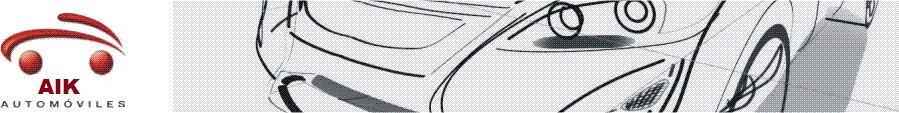
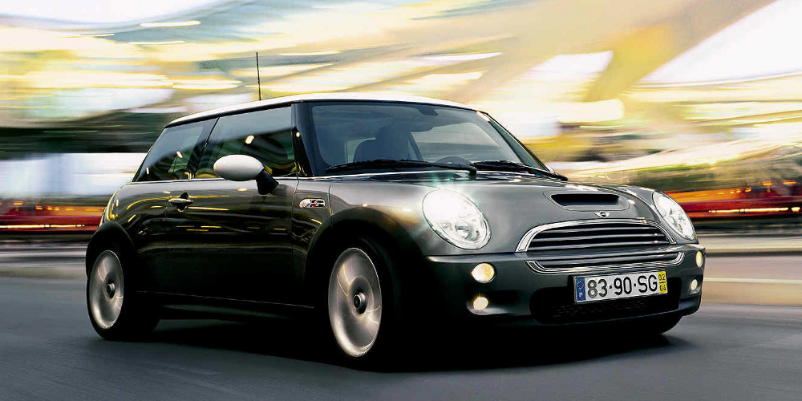
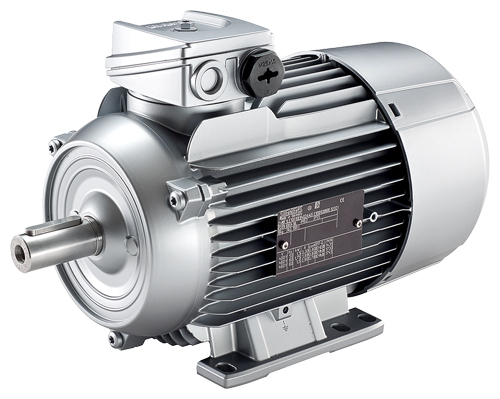
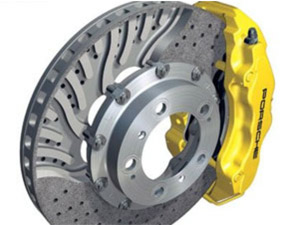

|  |
|  |
El primer automovil con motor de combustion interna se atribuye a Karl Friedrich Benz en la ciudad de Mannheim en 1886 con el modelozbr Benz Patent-Motorwagen.5 Poco después, otros pioneros como Gottlieb Daimler y Wilhelm Maybach presentaron sus modelos. El primer viaje largo en un automóvil lo realizo Bertha Benz en 1888 al ir de Mannheim a Pforzheim, ciudades separadas entre si por unos 105 km.6 Cabe destacar que fue un hito en la automovilistica antigua, dado que un automovil de esta epoca tenia como velocidad maxima unos 20 km/h, gastaba muchísimo mas combustible de lo que gasta ahora un vehículo a esa misma velocidad y la gasolina se compraba en farmacias, donde no estaba disponible en grandes cantidades |
 |
Un motor es la parte sistemática de una máquina capaz de hacer funcionar el sistema, transformando algún tipo de energía (eléctrica, de combustibles fósiles, etc.), en energía mecánica capaz de realizar un trabajo. En los automóviles este efecto es una fuerza que produce el movimiento. |
 |
El sistema frenos antibloqueo (ABS) es un sistema de frenado que evita que las ruedas se bloqueen y patinen al frenar, con lo que el vehículo no solamente decelera de manera óptima, sino que permanece estable y direccionable durante la frenada (podemos girar mientras frenamos). Fue diseñado para ayudar al conductor a mantener cierta capacidad de dirección y evitar el arrastre durante el frenado. Con el sistema ABS se impide que ninguna de las 4 ruedas patine, lo que permite dirigir el vehículo y seguir manteniendo el frenado (frenar y dirigir al mismo tiempo) |